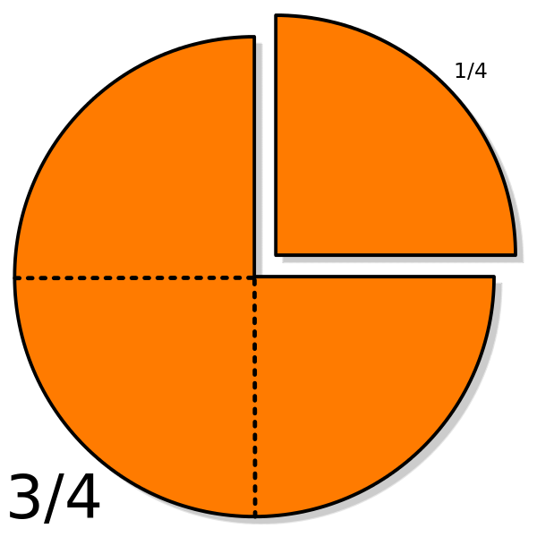
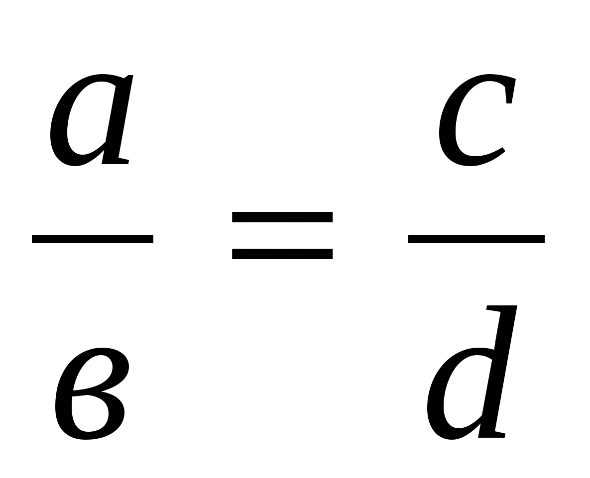
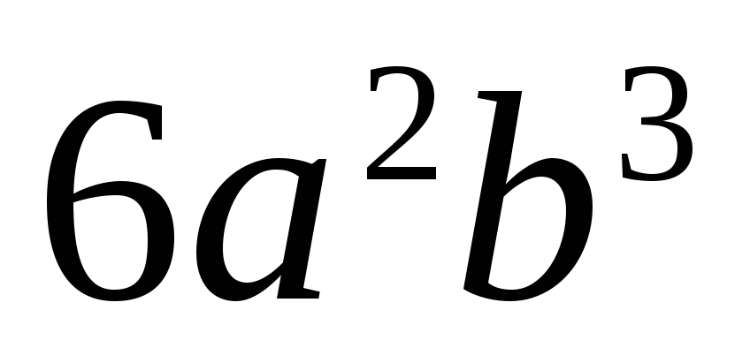
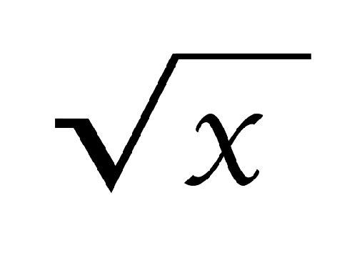

Доступні теми:
Відсотки

Дроби
Степінь

Пропорції

Многочлен

Формули скороченного множення
Модуль

Корень
Цікава математика
Факти
- Вся математична інформація розміщена у величезній кількості книг: на сьогодні, їх більше 100 000.
- Перша у світі жінка-математик жила ще за півтисячоліття до нашої ери в Стародавній Візантії і звали її Гіпатія.
- У перекладі з арабської «цифра» означає «нуль», але історично так склалося, що цим словом ми називаємо в принципі всі цифри.
- Наймістичнішим і оповитим легендами числом вважається 666 — число звіра і антихриста (назване так в одному з віршів книги Одкровення). З ним пов'язана велика кількість цікавих математичних фактів:
- Сума всіх чисел на рулетці дорівнює 666;
- У Європарламенті є крісло 666, але його за традицією ніхто не займає;
- У великої кількості об'єктів по всьому світу замінили число 666 на інше, у зв'язку з протестами вірян. Це стосується номерів шосейних трас, маршрутів громадського транспорту, телефонних кодів.
- Найдавніша математична праця була знайдена не на території Стародавнього Риму або Олександрії, а в Свазіленді, і являє собою кістку бабуїна з вибитими на ній рисками, її вік складає майже 40 000 років.
- Від'ємні числа аж до XIX століття майже не використовувалися, тому що їх вважали безглуздими і не застосовними. Однак вони мали попит у людей, які ведуть свої справи, для позначення фінансових збитків. Від'ємні числа так і з'явилися на початку XIII століття — італійський купець Пізано винайшов їх для того, щоб фіксувати свої борги.
- Релігійні євреї прагнуть уникати християнської символіки і взагалі знаків, схожих на хрест. Наприклад, учні деяких ізраїльських шкіл замість знака «плюс» пишуть знак, що повторює перевернуту букву «т».
- Італійці не люблять число 17. Це пішло з часів стародавнього Риму, коли на всіх надгробках писали напис «мене більше немає», який візуально мав вигляд «VIXI», тобто як римські цифри 6 і 11, які в сумі дають 17.
- Деякі числа нескінченної послідовності числа ПІ мають імена вчених. Наприклад, відрізок «999999» названий на честь американського фізика Річарда Фейнмана, який вивчив всі числа після коми до дев'яток, щоб в кінці вимовити «9» шість разів.
- Найбільшим числом у світі вважається центильйон, він має 600 нулів.
Рекорди
- Число Пі Рекорд 2011 року за найточнішому обчисленню числа «пі» поки не побитий. Однак є інші рекордсмени, яким число «пі» допомогло в демонстрації феноменальних здібностей. Так світовий рекорд із запам'ятовування знаків числа «пі» після коми належить китайцю Лю Чао. У 2006 році він відтворив 67 890 знаків після коми без помилки. Цей процес зайняв у нього 24 години і 4 хвилини.
- Найбільше число в фізиці Ще одним числом, які претендують на максимальну точність, було передбачуване число протонів і електронів у Всесвіті. Англійський астроном Артур Еддінгтон з повною серйозністю заявив, що йому вдалося обчислити це число, і дорівнює воно 15 747 724 136 275 002 577 605 653 961 181 555 468 044 717 914 527 116 709 366 231 425 076 185 631 031 296. Правда, з цими надточними підрахунками не погодилися і всерйоз не сприйняли.
- Велика теорема Ферма Це завдання визнана однією з найскладніших в математичної історії. 350 років нікому не вдавалося ніхто не міг довести гіпотезу математика XVII століття П'єра Ферма. Генію, яке здійснило цей науковий подвиг, була обіцяна Міжнародна премія короля Фейсала. І ось в 1998 році ці 200 000 доларів отримав англієць Ендрю Уайлз, що працює в Прінстонському університеті - він зміг вирішити теорему, що потрапила в Книгу рекордів Гіннеса за свою «живучість». До речі, премія пережила інфляцію: в 1908 році нагорода була заявлена як 100 000 німецьких марок і була найбільшою премією, але в результаті інфляції вона стала дорівнювати 10 000 німецьких марок.
- Найшвидші обчислення в розумі Йоган Дазе міг за 54 секунди помножити в думці два 8-значних числа, два 6-значних числа - за 6 хвилин, а два 40-значних за 40 хвилин. При цьому інші області математики Дазе так і не далися - сильний він був тільки в множенні великих чисел. Житель Нової Зеландії Олександр кейгени за 2 секунди звів в квадрат число 57586. Крім того, він міг запам'ятати значення числа з точністю до 1000 знаків після коми.
- Mатематична пам'ять Одного разу математик Леонард Ейлер довго не міг заснути вночі. Але замість того, щоб спробувати лічити про себе овечок, Ейлер в розумі обчислив перші 6 ступенів всіх цілих чисел від 1 до 20. Отримані результати він міг повторити напам'ять через кілька днів. Більш того, математик може стати відмінним прикладом творчої працездатності. За своє життя він написав стільки, що через 50 років після його смерті його праці продовжували друкуватися вперше. В результаті зібрання його творів склало 75 томів.
- Теореми-рекордсмени Теорема Піфагора може похвалитися найбільшою кількістю доказів. У книзі, опублікованій в 1940 році, міститься 370 різних способів доказів, одне з яких запропонував сам президент США Гарфілд. А доказ класифікації всіх кінцевих простих груп зайняло більше 14 000 сторінок. Вони містили близько 500 наукових робіт, над якими працювали понад 100 математиків. Саме доказ тривало довше 35 років.
Відомі вислови відомих математиков
- Математика — це мова плюс роздум. (Р. Фейнман)
- Математика — це велична споруда, створена уявленнями людини, для пізнання Всесвіту. (Ле Корбюз’є)
- Серед всіх наук, які відкривають шлях до пізнання законів природи, найбільшої є математика. (С. Ковалевська)
- Алгебра — інтелектуальний інструмент, який створений, щоб додати ясність кількісному аспекту миру. (А. Уайтхед)
- За допомогою рівнянь, теорем Я безліч всяких вирішив проблем. (Чосер, англійський поет, середні століття)
- Математика є праобраз краси миру. (І. Кеплер)
- Математик повинен бути поетом в душі. (С. Ковалевські)
- Математика володіє не тільки істиною, але і вищою красою, холодною і суворою, подібною красі скульптури. (Б. Рассел)
- Цифри не управляють світом, але вони показують, як управляється світ. (І. Гете)
- Навіть найплоскіша людина, на жаль, існує в трьох вимірюваннях. (СЕ. Лец)